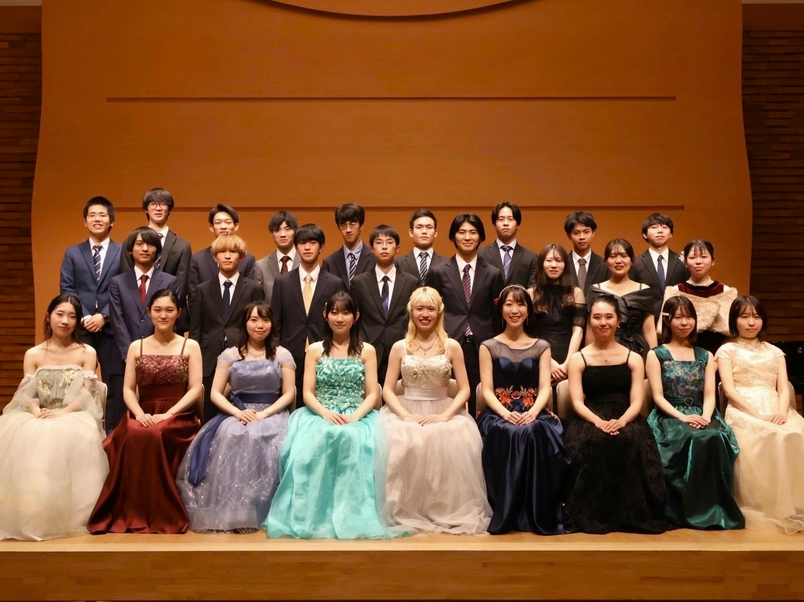
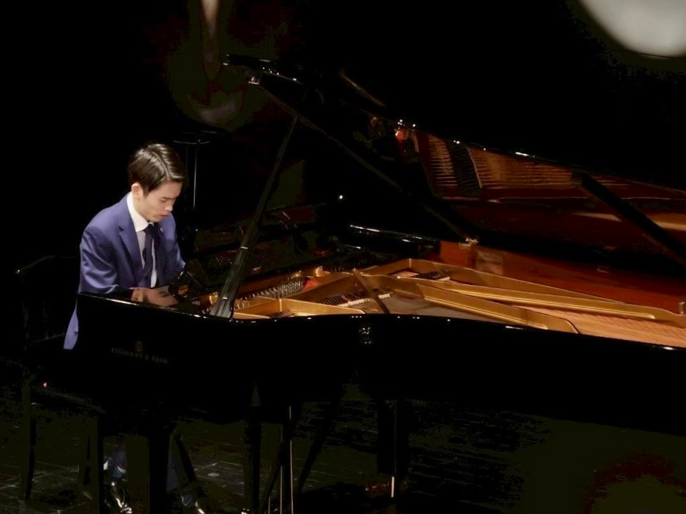

KLAVIERとは
明治大学ピアノの会KLAVIERは、和泉・駿河台キャンパスを拠点に活動する明治大学公認のピアノサークルです。
大学からピアノを始めた初心者から、コンクール入賞経験のある上級者まで、幅広いメンバーが在籍しています♪
現在は75名が所属しており、男女比はおおよそ1:1です。


明治大学ピアノの会KLAVIERは、和泉・駿河台キャンパスを拠点に活動する明治大学公認のピアノサークルです。
大学からピアノを始めた初心者から、コンクール入賞経験のある上級者まで、幅広いメンバーが在籍しています♪
現在は75名が所属しており、男女比はおおよそ1:1です。


KLAVIERは東京六大学ピアノ連盟（通称「六連」）に所属しています。
六連は慶應・上智・東大・明治・立教・早稲田の6大学のピアノサークルで構成される連盟です。
当サークルは、六連が主催するすべての演奏会やサロンに参加することができ、参加費もサークルが負担しています。